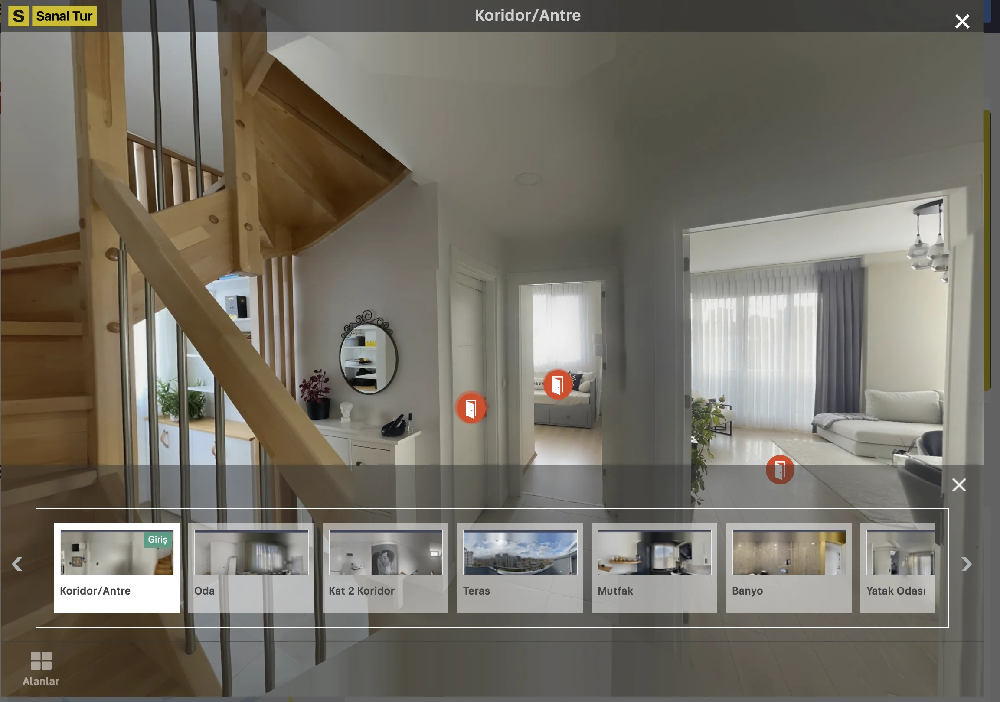
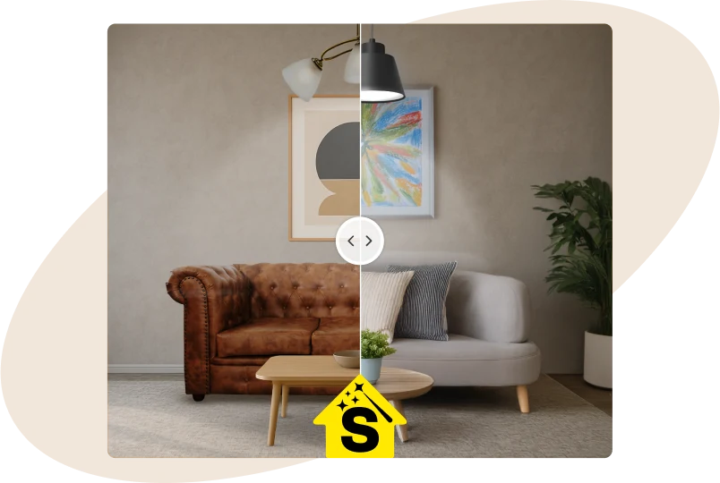

Frontend Development
- UI Development
- Responsive Layouts
- Web Performance
14+ yıllık deneyimimle karmaşık ürün ihtiyaçlarını sade, sürdürülebilir ve kullanıcı odaklı web deneyimlerine dönüştürüyorum.
İstanbul'da yaşayan, 2012'den bu yana dijital ürünler geliştiren bir front-end developer'ım.
Ajans ve ürün şirketlerinde edindiğim deneyimi; sürdürülebilir arayüz mimarileri, modern web teknolojileri ve kullanıcı deneyimi odağında birleştiriyorum.
İletişime geçFikirden yayına. Hızlı, sade ve gerçek kullanımda karşılığını veren dijital ürünler.

Makine öğrenmesi destekli ürün arayüzü · Vue.js ile SaaS dönüşümü

Yapay zekâ destekli fotoğraf düzenleme ürününün arayüz geliştirmesi
Kurumsal Web Components kütüphanesine katkı
Araba.com, Tasit.com ve Garaj Sepeti Marketplace ürünlerinin arayüz geliştirme süreçlerinde görev aldım. Mevcut ürünleri sürdürürken yeni özellikler, hata düzeltmeleri ve responsive deneyimler geliştirdim.
AngularJS tabanlı e-ticaret uygulaması, Angular 2–7 ile CMS çözümleri ve çeşitli SPA projeleri geliştirdim. Kurumsal markalar için web arayüzlerini tasarımdan çalışan ürüne taşıdım.
Kurumsal ERP web uygulamalarının ön yüz geliştirme süreçlerine katkı sağladım; web ve hibrit mobil arayüzlerde yeniden kullanılabilir çözümler ürettim.
Ajans projelerinde mockup ve PSD tasarımlarını responsive web arayüzlerine dönüştürdüm; tarayıcı uyumluluğu ve temel performans iyileştirmeleri üzerinde çalıştım.
Farklı ölçeklerdeki ekiplerde; e-ticaret, otomotiv ve ilan platformları için kullanıcı odaklı web ürünleri geliştirdim. Teknik yaklaşımım, güçlü arayüz temellerini ürün düşüncesi ve sürekli öğrenmeyle bir araya getiriyor.
Frontend Developer
Türkiye'nin önde gelen teknoloji platformlarından birinde ürün arayüzleri ve sürdürülebilir frontend çözümleri geliştiriyorum.
Front End Developer
Araba.com dahil otomotiv pazarına yönelik ürünlerin web arayüzlerinde çalıştım.
Front End Developer
AngularJS tabanlı e-ticaret uygulamaları, Angular 2–7 ile CMS çözümleri ve tek sayfa web uygulamaları geliştirdim.
Web Developer
ERP web uygulamalarının frontend geliştirme çalışmalarını yürüttüm.
Front End Developer
Ajans projeleri için arayüz taslakları hazırladım ve bunları çalışan web arayüzlerine dönüştürdüm.
Front End Developer
Butik web tasarımlarını HTML, CSS ve JavaScript kullanarak çalışan arayüzlere dönüştürdüm; projelerin kullanıcı deneyimi tasarımlarına katkı sağladım.
Freelance Full-Stack Developer
Kurumsal markalar için web siteleri geliştirdim; PSD tasarımlarını arayüze dönüştürdüm ve saf PHP ile hafif içerik yönetim sistemleri hazırladım.
Application Testing Specialist
Kariyer.net'in yenilenen web sitesi için görsel, teknik ve deneyimsel hata kontrolleri gerçekleştirdim; bulguları dokümante ederek uyumluluk süreçlerine katkı sağladım.
Meslek Yüksekokulu
Bilgisayar Teknolojileri ve Programlama
Aptech Certificate
Yeterlilik kimliği: 02934Frontend geliştirme, ürün arayüzleri ve tasarım sistemleri üzerine notlar burada yayınlanacak.
İlk yazı hazırlanıyor.Bir projeniz ya da ihtiyaç duyduğunuz bir destek varsa bana e-posta ile ulaşabilirsiniz.